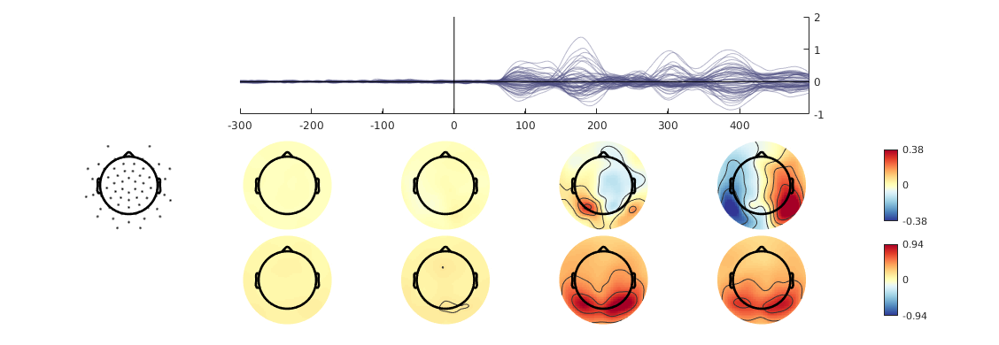

Contents
% This data comes from an experiment with 15 subjects were a gabor patch % was shown to the left or the right. % Shown here is the difference between a stimulus in the left minus a % stimulus in the right. To be more exact: The data were run through a GLM % on subject level and we see here the beta estimate of the % stimulus-position predictor. More information on the study can be found % in Ehinger et al. 2015 J. Neurosci. % http://www.jneurosci.org/content/35/19/7403 EEG = pop_loadset('example.set');
pop_loadset(): loading file example.set ... Reading float file 'example.fdt'...
Main Plot
This plot shows the beta-values in the first toporow, STD over subjects in the second, and the p-values in the third row. In addition a single channel was highlighted.
plot_main(EEG.data(:,:,[1 2 3]),EEG.times,EEG.chanlocs,'pvalues',EEG.data(:,:,3),'highlighted_channel',10,'colormap',{{'div','RdYlBu'},{'seq','YlGnBu'},'seq'},'topoalpha',0.005)
Plotting Topoplots ... 3.25s for row 1/3 Plotting Topoplots ... 3.82s for row 2/3 Plotting Topoplots ... 4.36s for row 3/3
How to plot p-values on a log scale:
It seems to make sense to plot p-values on a log scale. In order to not overload the functions with (unnecessary) functions, I decided that transformations should be done by the user previous to function call.
alphaLog = log10(0.005); tmpData = log10(EEG.data(:,:,3)); % change p-values to log-scale hA = plot_main(cat(3,EEG.data(:,:,1),tmpData),EEG.times,EEG.chanlocs,'pvalues',tmpData,'highlighted_channel',10,'colormap',{'div','seq'},'topoalpha',alphaLog); % Fix the scaling of the colorbar hA.topo.colorbar{2}.XTick = log10([0.001 0.005 0.05]); hA.topo.colorbar{2}.TickLabels = [0.001 0.005 0.05];
Plotting Topoplots ... 3.28s for row 1/2 Plotting Topoplots ... 3.67s for row 2/2
Only show the butterfly plot
There are quite a few customizations possible
plot_main(EEG.data(:,:,[1]),EEG.times,EEG.chanlocs,'pvalues',EEG.data(:,:,3),'topoplot','no')
Only show the topoplots
plot_main(EEG.data(:,:,[1]),EEG.times,EEG.chanlocs,'butterfly','no')
Plotting Topoplots ... 3.16s for row 1/1
Change the number of topoplots
plot_main(EEG.data(:,:,[1]),EEG.times,EEG.chanlocs,'n_topos',10)
Plotting Topoplots ... 1.94s for row 1/1
Give 3 rows of data, but plot only the first two
plot_main(EEG.data(:,:,[1 2 3]),EEG.times,EEG.chanlocs,'n_topos',4,'n_rows',2)
Plotting Topoplots ... 0.70s for row 1/2 Plotting Topoplots ... 0.73s for row 2/2
deactivate minorXTticks
the small xticks signify between which samples the topoplots have been averaged. These are on by default, but can be deactivated as well.
plot_main(EEG.data(:,:,[1 2]),EEG.times,EEG.chanlocs,'n_topos',4,'minorXTicks',0)
Plotting Topoplots ... 0.71s for row 1/2 Plotting Topoplots ... 0.73s for row 2/2